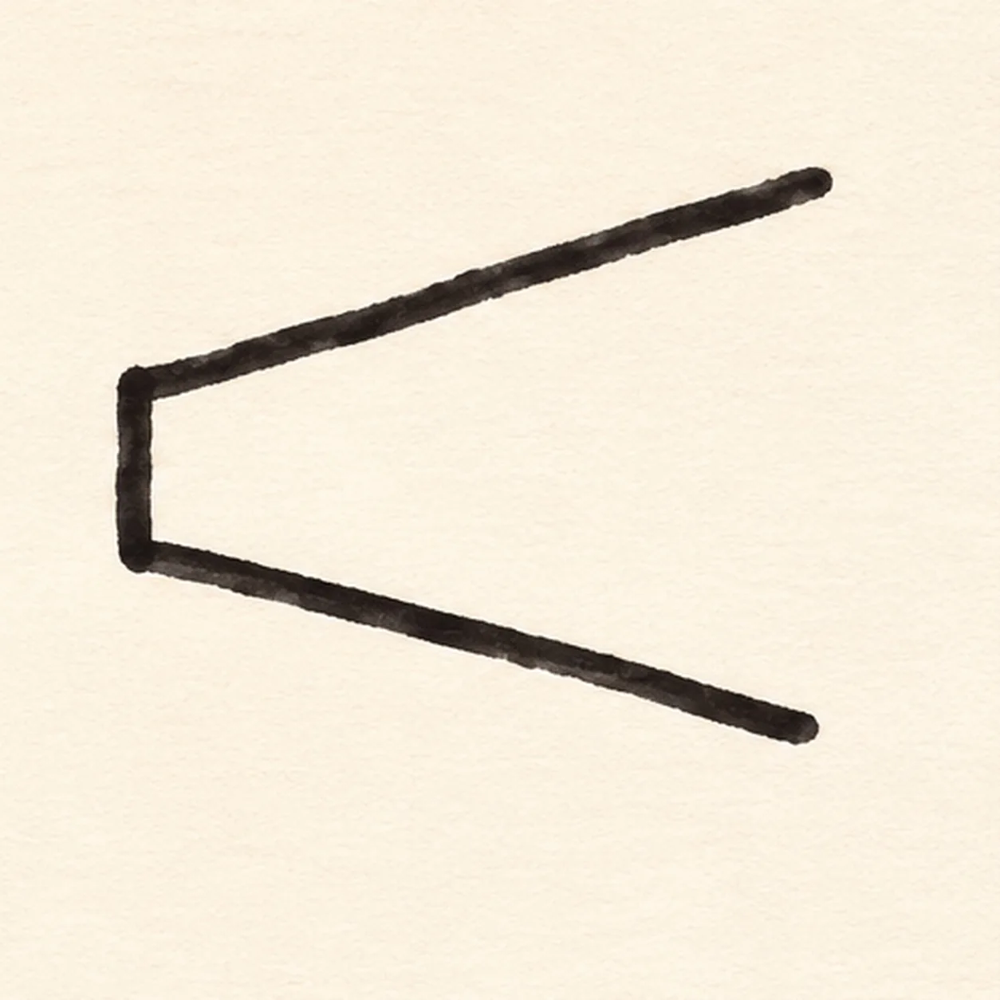
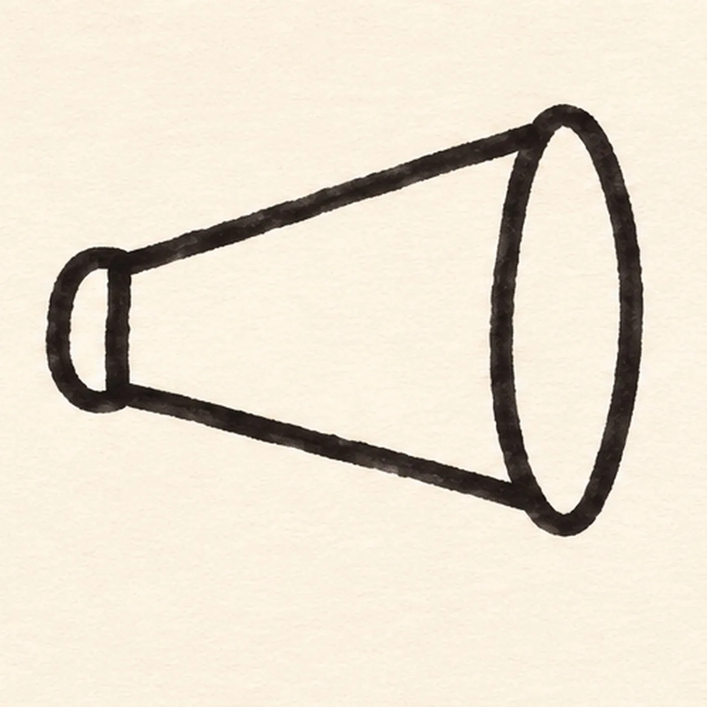
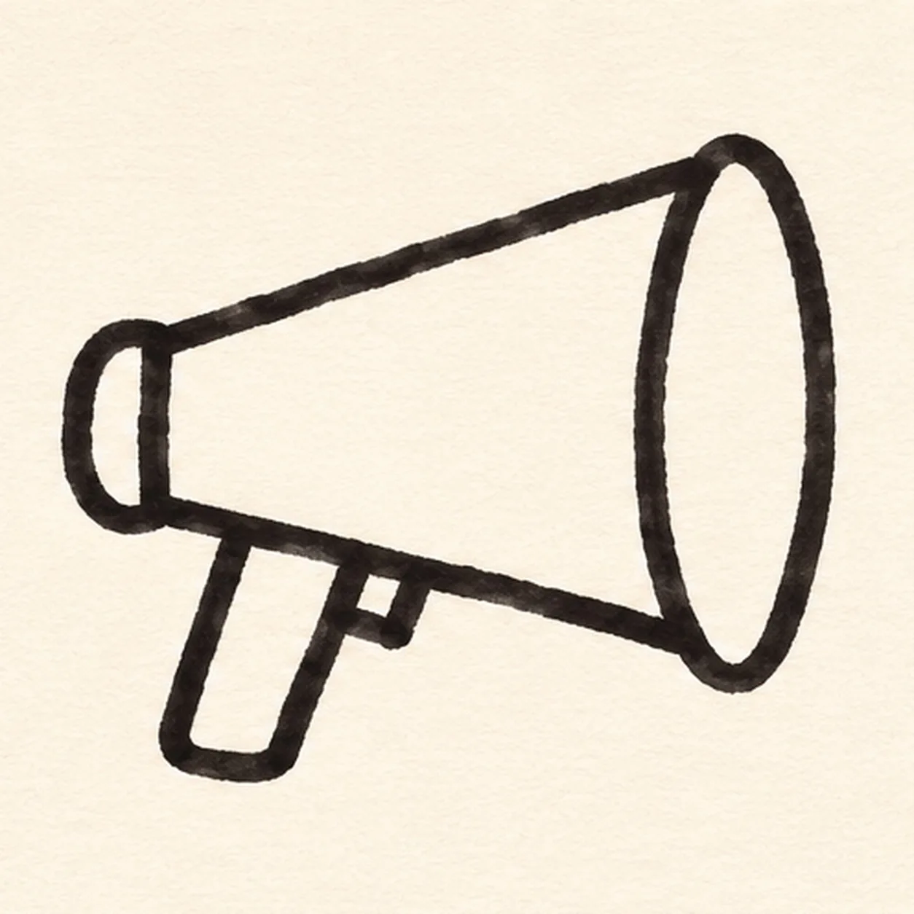
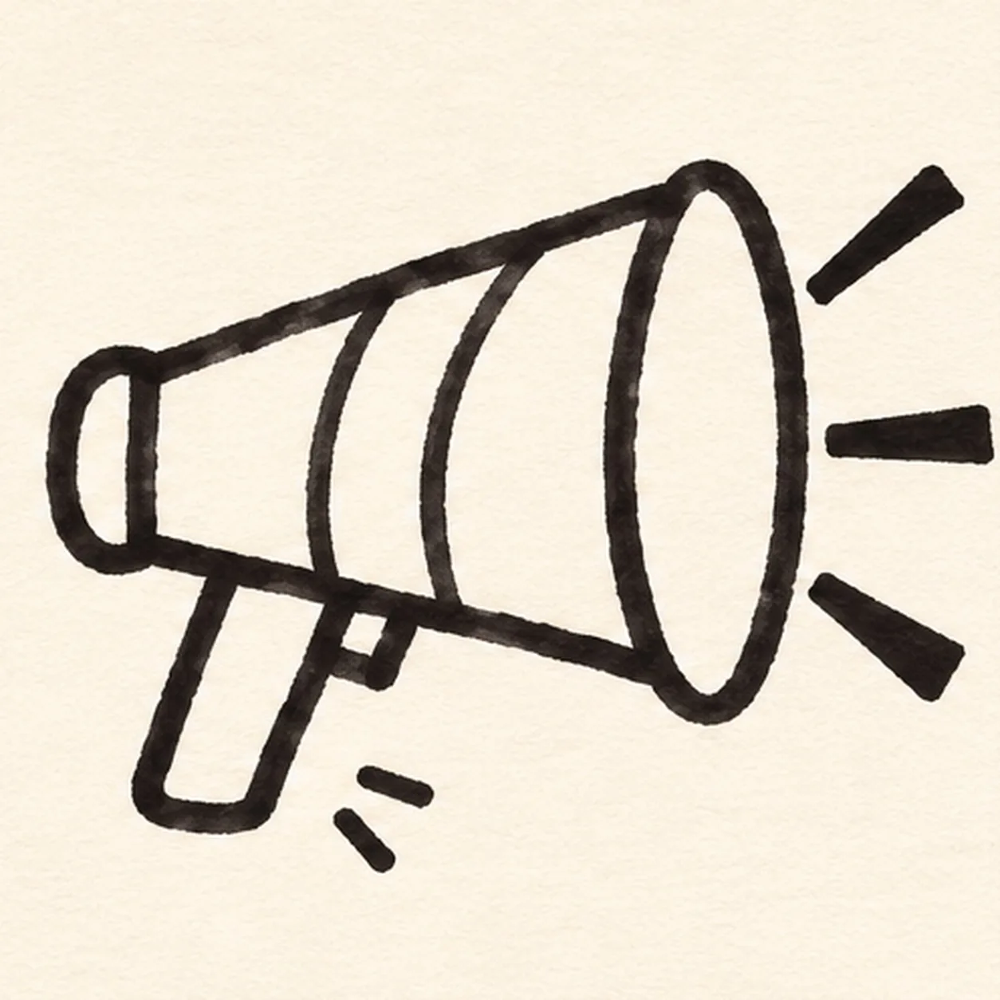

Felt-tip marker mode
Let's draw a comic megaphone
Treat this as one playful practice round: sketch the idea loosely, simplify the shapes, then commit with confident marker outlines and bright fills.
-
01

Aim the cone
Start with a short vertical back edge on the left. Pull two black marker lines outward toward the right, one up and one down, stopping before they meet so the front stays open.
Marker tip: Ghost each long sloping stroke in the air twice, then pull it confidently from back to front.
-
02

Open the speaker mouth
Join the wide right ends with one tall oval mouth outline. At the narrow left, add one rounded cap attached to the short back edge.
Marker tip: Rotate the paper to draw the tall oval smoothly; keep the opening white for now.
-
03

Attach the grip
From the cone’s lower left half, drop a short handle, turn across its base, and return to the body. Put one small trigger tick just ahead of the grip.
Marker tip: Trace the handle connection with your finger to check that neither side floats.
-
04
Send out the sound
Outside the open mouth, draw three separate tapered strokes: one up-right, one straight right, and one down-right. Leave white gaps between them.
Marker tip: Count the three rays before you ink; their open spacing makes them readable at thumbnail size.
-
05

Band the cone
Curve one broad stripe across the cone body, following its taper. Add two short motion dashes below the handle without crossing the grip.
Marker tip: Leave a little white paper between the band edges so its yellow fill stays bright.
-
06
Fill the comic colors
Fill the existing cone warm orange, the center band yellow, the grip teal and the three sound rays coral. Darken the hollow mouth interior black and let marker streaks follow the cone length.
Marker tip: Let black outlines dry first; pull orange strokes from the narrow back toward the wide mouth so the texture follows the form.